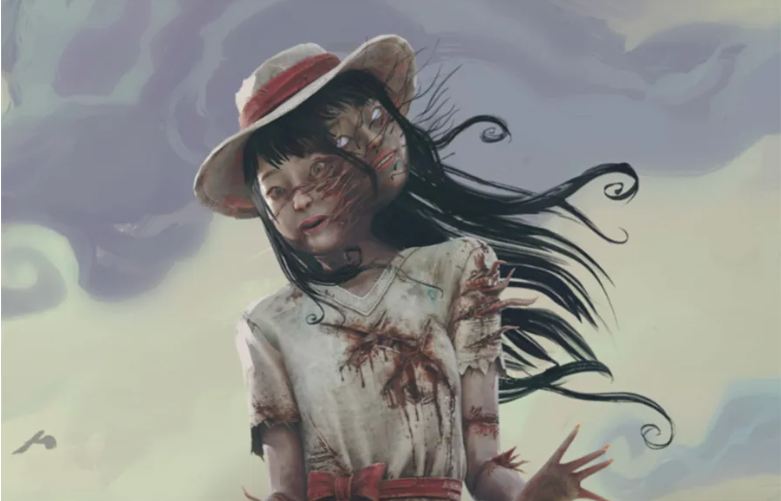

Introdução✨✨✨
👻 A Assassina Faseante: Spirit 👻
✨✨✨
- 🔪 Poder Único: Assombração de Yamaoka 🔪
👻 Permite que a Spirit se teletransporte entre fases, tornando-se invisível e inaudível para os Sobreviventes durante a travessia. 💨
- 👁️🗨️ Ideal para emboscadas e pegar Sobreviventes desprevenidos! 😱
🩸 Vantagens Pessoais 🩸
🔥 Fúria Espiritual 🔥
💪 Após quebrar um palete, a Spirit ganha um aumento significativo de velocidade por um curto período. 🏃♀️💨
- 🎯 Perfeita para perseguir Sobreviventes que tentam ganhar distância com paletes.
- 💀 Hex: Terreno Assombrado 💀
🗺️ Dois totens aleatórios no mapa tornam-se Hex Totens. 💀
💥 Enquanto um Hex Totem estiver ativo, todos os Sobreviventes ficam sob o efeito de Exaustão ao serem atingidos por um ataque básico. 😫
⚠️ Destruir os totens remove o efeito.
- 😠 Rancor 😠
👁️🗨️ Quando os geradores são concluídos, a aura do ÚLTIMO Sobrevivente que completou um gerador é revelada à Spirit por um curto período. 🔦
💔 Se todos os geradores forem concluídos, a aura de todos os Sobreviventes é revelada brevemente. 🔦🔦🔦🔦
🔪 Além disso, se um Sobrevivente estiver obcecado e sobreviver à partida, o assassino vê sua aura por 5 segundos no início da partida seguinte. 👀
- 📜 História e Legado 📜
😠 A Spirit carrega uma fúria ancestral em suas veias. 🔥
💔 A dor terrível que ela sofreu despertou essa ira. 😭
💨 Rápida e letal, ela busca vingança incessantemente. 💀
- 📊 Nível de Dificuldade 📊
🤯 Difícil.
- 🧠 Requer prática e domínio de suas mecânicas únicas de travessia para ser eficaz. 🕹️
- 🤔 Exige previsão e timing precisos para emboscar Sobreviventes com seu poder.
Historia✨✨✨
Rin Yamaoka, a história de 🌸 desenrola-se na tranquila Kagawa, onde ela cresceu como filha única em um lar tradicional 🏡. Sua ambição de cursar Pedagogia 📚 em Takamatsu, numa universidade particular 🎓, lançou um peso financeiro considerável sobre sua família 😥, que já enfrentava tempos difíceis 😔.
- A situação se tornou ainda mais sombria com a doença de sua mãe 🤒, levando ao acúmulo de contas 🧾. Para tentar aliviar o fardo de seus pais 🙏, Rin conciliava os estudos com um trabalho de meio período 💼, mas seus esforços, por mais dedicados que fossem 💪, mostravam-se insuficientes diante da crescente crise 💔.
- Seu pai, atormentado por uma dívida implacável ⛓️, agarrava-se à vã esperança de uma promoção, trabalhando em turnos duplos exaustivos 🌃➡️☀️. A exaustão logo o consumiu por completo 💀, mas não era apenas o cansaço físico que o perturbava. Um "sussurro sombrio" 🌑 o assombrava durante a noite 👻, repetindo incessantemente sua situação desesperadora 🗣️➡️👂. Gradualmente, a tênue linha entre a realidade e a alucinação começou a se esgarçar em sua mente perturbada 🧠➡️😵💫. Lutando desesperadamente para negar as palavras insidiosas que o perseguiam 🙅♂️, ele tomou uma atitude derradeira ❗
- Buscou seu superior na empresa onde dedicara leais 22 anos de sua vida 🏢 e expôs sua calamitosa situação financeira 🗣️➡️😭, implorando por qualquer tipo de auxílio 🙏: um bônus 💰, um adiantamento 💸, até mesmo uma folga para tentar encontrar outra solução 🗓️➡️❓.
- Seu apelo desesperado foi sumariamente negado 🚫. A empresa enfrentava sérios prejuízos 📉 devido ao lançamento de uma linha de produção defeituosa 🏭➡️❌. A necessidade de encontrar um responsável recaiu cruelmente sobre o pai de Rin 🎯, que se encaixava no perfil de alguém a ser responsabilizado injustamente 😔. Após mais de duas décadas de serviço leal 🏅, ele foi impiedosamente demitido 🚪➡️🚶♂️.
- Naquela noite fatídica 🌃💔, Rin retornava exausta do trabalho 🚲➡️🏠. Ela havia se dedicado a atender os últimos clientes do restaurante onde trabalhava arduamente 🍽️. Ao guardar sua bicicleta no galpão 🚲➡️🏚️, um grito lancinante de sua mãe ecoou pela casa 😱🔊. Instintivamente, Rin correu para dentro 🏃♀️➡️🏠, subindo as escadas apressadamente em direção ao quarto de seus pais 🪜➡️🚪. A cena horripilante que se descortinou diante de seus olhos a petrificou de terror 🥶. No chão, jaziam os restos mutilados de sua mãe 💀💔. Seus membros estavam desmembrados e retorcidos em uma posição grotesca 肢➡️🦴. Seus seios haviam sido brutalmente cortados 🔪🩸, expondo a caixa torácica horrivelmente fraturada 💔➡️💀. Um engasgo de puro terror escapou da garganta de Rin 😨💨.
- No instante seguinte, o brilho frio e sinistro de uma katana afiada 🔪 desceu em sua direção com um som cortante 🔪➡️💨. Em um reflexo desesperado ⚡, Rin ergueu o braço, bloqueando o golpe que atingiu seu antebraço nu ✋➡️🩸. A dor lancinante 🔥 foi momentaneamente obscurecida por um choque de reconhecimento aterrador 🤯: seu pai, com uma expressão vazia e estoica 😶, empunhava a arma mortal 🔪💀. Rin gritou em agonia e súplica 🙏🔊, implorando para que ele parasse 😭, mas o pai, alheio aos seus apelos desesperados 👂❌, desferiu outro golpe brutal 🔪➡️🩸, cortando seu braço novamente 💔.
- Ela tentou fugir desesperadamente 🏃♀️, mas escorregou no chão encharcado de sangue 🩸➡️滑. Usando o batente da porta como apoio precário 🚪➡️💪, conseguiu se levantar cambaleante 🚶♀️➡️🤕. A katana atravessou a parede 🔪➡️🧱, atingindo seu outro braço 💔➡️🩸. Um grito agudo de dor lancinante rasgou o ar 😫🔊 enquanto Rin mancava pelo corredor ensanguentado 🚶♀️➡️🩸, apenas para ser novamente atingida pela lâmina impiedosa do pai 🔪➡️💔.
- Ela cambaleou para trás, tremendo incontrolavelmente 🥶, enquanto suas mãos agarravam a carne macia e flácida de seu abdômen, agora horrivelmente cortado 💔➡️🩸➡️🖐️. Imagens dos membros mutilados de sua mãe dançavam diante de seus olhos aterrorizados 💀💔➡️😵💫, intensificando seu horror e desespero 😭💔.
- Em um último ato de desespero e fúria 🔥, Rin investiu contra o pai 💥, pegando-o de surpresa e fazendo-o cambalear para trás 😵💫➡️🚶♂️⬅️. Ele reagiu com um soco brutal no abdômen dilacerado de Rin 👊➡️💔, fazendo-a recuar em agonia 😫➡️🚶♀️⬅️. Enquanto ela lutava para se levantar em meio à dor lancinante 💪➡️⬆️, ele cortou sua coxa 🔪➡️🦵➡️🩸, fazendo-a desabar no chão em uma poça de sangue crescente 💔➡️🩸➡️⬇️.
- Arrastando-se com dificuldade em direção à escada 🩸➡️🚶♀️➡️⬇️, Rin sentiu seus cabelos serem agarrados com força 👧➡️🖐️➡️拽. Seu pai a puxou violentamente contra uma divisória de vidro 💥➡️🖼️. O impacto estilhaçou o vidro em milhares de fragmentos cortantes 💥➡️碎, e Rin caiu brutalmente, aterrissando um andar abaixo 🤕➡️⬇️.
- Ela ouviu os passos pesados de seu pai ecoando em algum lugar acima 👣🔊⬆️. Com um esforço quase sobre-humano 💪, ela tentou se mover, abrindo caminho em um mar de cacos de vidro afiados 🌊➡️碎➡️🩸. Os fragmentos cortavam sua pele já ferida 🔪➡️👧➡️🩸, lacerando sua carne com dor lancinante 🔥. Uma determinação sombria tomou conta de seu ser 🌑➡️💪: ele precisava ser detido 🛑. Ele não escaparia impune do que havia feito com ela, do que havia feito com sua mãe 😠.
- Tossindo sangue 🗣️➡️🩸, seu queixo roçou nos cacos de vidro cortantes 🤕➡️碎➡️🩸, intensificando o sangramento. Um batimento cardíaco grave começou a soar em seus ouvidos 💔➡️👂, abafando todos os outros sons ao redor 🔇. Seu corpo parecia incrivelmente pesado 🏋️♀️➡️⬇️, como se ela estivesse afundando em um abismo de dor e exaustão 🌊➡️😭, tornando qualquer movimento uma tortura excruciante 🔥.
- O chão tremeu com a aproximação dos passos de seu pai 👣🔊➡️震. No fundo de sua mente obscurecida pela dor 🧠➡️🌑, Rin sabia que suas chances eram nulas 📉, mas naquele momento, a própria sobrevivência parecia irrelevante 🤷♀️. Uma sede avassaladora de justiça e vingança consumia seus últimos resquícios de consciência 🔥➡️⚖️➡️😠. Ele pagaria por seus atos hediondos, nesta vida ou na próxima 💀➡️⏳.
- Uma névoa escura começou a obscurecer sua visão 👀➡️🌫️, engolindo lentamente o mundo ao seu redor 🌑. No entanto, nem mesmo a escuridão iminente conseguia conter a fúria incandescente que fervilhava em seu coração 🔥➡️😠. Ela não descansaria, não ainda 🙅♀️➡️⏳. A própria escuridão parecia sussurrar promessas de sangue e vingança 🌑➡️🗣️➡️🩸➡️😠, alimentando sua determinação final 💪.
- Naquele momento liminar entre a vida e a morte ⏳➡️💀, um juramento silencioso foi selado 🤫➡️誓. Com a raiva ainda incandescente em sua alma 🔥➡️😠, Rin Yamaoka fechou os olhos 👀➡️🌑, entregando-se à escuridão com a promessa de retribuição ecoando em seu ser 🗣️➡️复仇.
👻 5 Curiosidades Assustadoras sobre a Spirit de DBD 👻✨✨✨
- 1. 👻 A Origem Trágica: A história de Rin Yamaoka (a Spirit) é uma das mais sombrias e violentas do universo de Dead by Daylight. Ela testemunhou o assassinato brutal de sua mãe e foi atacada pelo próprio pai com uma katana, antes de sucumbir aos ferimentos. Essa tragédia é a fonte de sua fúria e de seus poderes sobrenaturais. 💔🔪
- 2. 🗣️ Sussurros do Além: Ao usar seu poder "Assombração de Yamaoka", a Spirit emite sussurros fantasmagóricos que podem ser ouvidos pelos Sobreviventes próximos. No entanto, a direção desses sussurros não corresponde à sua localização real durante a fase, tornando-os uma pista enganosa e perturbadora. 👂👻
- 3.👘 Traje Tradicional com um Toque Macabro: O visual da Spirit combina elementos de vestimentas tradicionais japonesas com sinais de sua violência e sofrimento. Suas roupas rasgadas e ensanguentadas, juntamente com seu rosto pálido e olhos vazios, refletem sua história trágica e sua sede de vingança. 🩸👘
- 4.🏃♀️ Uma das Assassinas Mais Rápidas: Durante a fase de seu poder, a Spirit se torna uma das assassinas mais rápidas do jogo, capaz de cruzar grandes distâncias em um instante. Essa velocidade, combinada com sua invisibilidade e a falta de som de passos, a torna extremamente perigosa para Sobreviventes desprevenidos. 💨
- 5.🎭 A Atriz por Trás do Grito: A voz dos gritos lancinantes da Spirit é da mesma dubladora de outra assassina icônica do jogo: a Huntress. Isso cria uma conexão sonora interessante entre duas personagens com histórias e estilos de jogo bem diferentes, mas ambas marcadas por tragédias e violência. 🗣️🎭
O criador